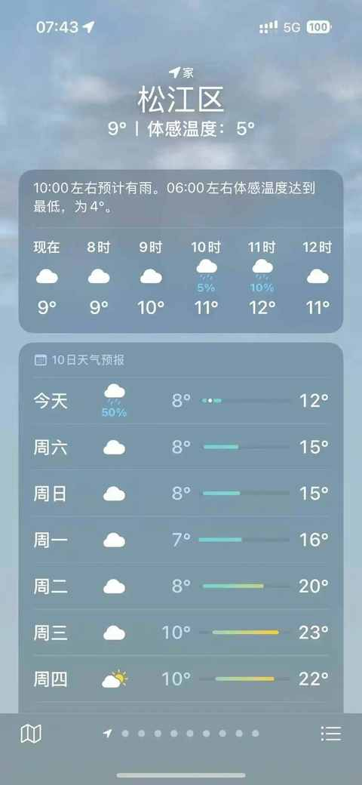
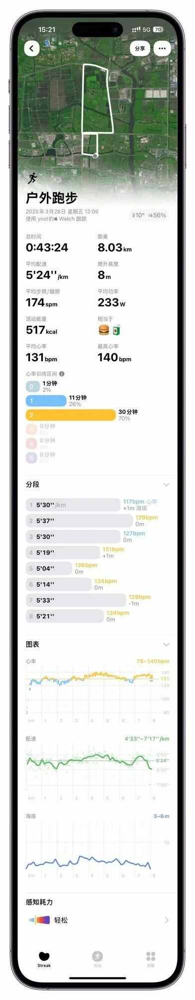
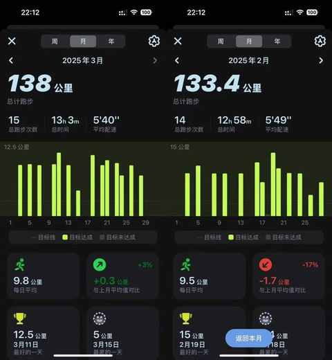
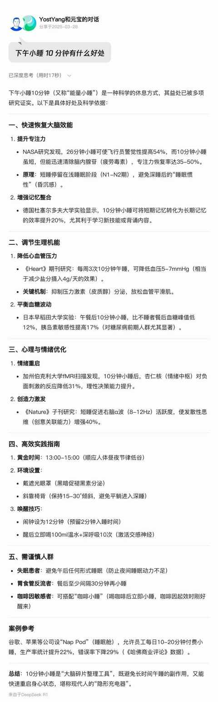
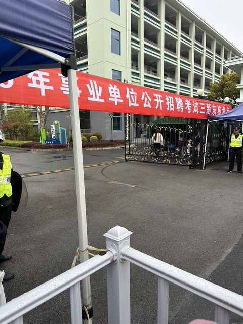
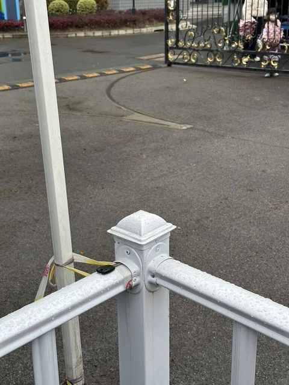
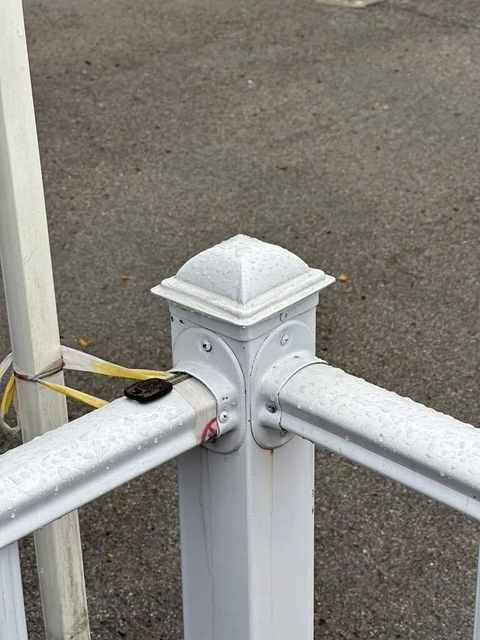

记在 3 月最后一个周五的二三事
一个与典型的周五有一丢丢不一样的一天， 记录下在 3 月的最后一个周五里发生的二三事。

一、突然回到冬天
早上看窗外没有下雨，也有不少电动车在路上，在未查看天气预报的情况下决定今天不开车送娃去学校，今天骑电动车。
刚骑上车就后悔了，我和娃都和昨天穿的一样，昨天和今天差 10 度以上。
硬着头皮骑到学校，还好他没有出现打喷嚏和流鼻涕的情况，希望他在学校暖暖的，千万别感冒。

二、跑步还得继续
跑一休一，昨天没跑，今天的跑步卡没跑咯。
磨蹭到接近 12 点出门，本来是能再早个 20 分钟左右，无奈出门的时候看到快递，就都拆开然后把垃圾收拾好之后再关门走人。
年岁渐长，居然越来越磨蹭，后面遇到快递也等跑步回来再拆。

加上今天的 8km，本月的总跑量也正式超过上个月。

三、小睡 10 分钟
其实并没有睡着，主要是闭目养神。
大约是每天下午 3 点左右都会有点困，尝试过看书、看短视频、做家务等方式，都尝试之后发现还是小睡 10-20 分钟最能缓解疲劳，补充能量。

四、“谢谢老天爷 ，不用吃东西！”
下午临出门看到外面在下雨，外卖员和接小孩放学的家长都穿着雨衣在骑电动车。
当机立断，决定开车接娃。
按惯例，今天是带他一起从学校走路回到家，全程大约 4.2km，对小孩子来说距离不短，和我一起慢点走也还行。
其中会路过一条能捡树枝的路，会路过烧饼摊和蜜雪冰城的店，总之一路上都有丰富的补给品。
在学校门口等的时候来了一个三连拍：



接到娃之后，我就让他猜猜今天是怎么回去， 当时雨已经停,他的第一反应就是走路，我便和他说出门的时候下雨了，就开车来了，但是忘记给他带吃的。
他兴奋的来了一句： “谢谢老天爷，不用吃东西！”
简直和给他买玩具一样开心，小孩子的快乐就是这么简单直接！
五、想反驳但不会
有感于跑步的时候听的一期播客，主要讲中国没有汽车文化，其中的一些观点隐隐觉得不对，很想去反驳但无从反驳。
已经出现不少次这种情况，思来想去不能一直这样，要补齐相关知识。
当听到（看到）一个观点，直觉上觉得不对，可想反驳却毫无头绪的时候，是真的需要学习相关知识了！
六、多放了一勺盐
一般每周一到周五会有一天的晚餐是娃爱吃的西葫芦饼，周五居多，因为时间上充足一些，做快点和做慢点都没啥影响。
秉持着三大营养素均衡的原则，今天的用料是：
- 一根西葫芦（大约 400g）
- 一罐金枪鱼（140g）
- 一小把韭菜
- 三个鸡蛋
- 一包玉米粒（80g）
- 一大勺面粉（大约 100g）
- 一勺姜黄粉（大约 10g）
- 三勺盐（多了一勺）
最终耗时 1 小时左右的成品有点咸，复盘下来应该是：
① 盐多放了一勺
② 姜黄也多放了点
③ 玉米粒不适合放一起煎
不过，娃在吃的时候没有说咸，可能是他边吃边牛奶的原因或者结果。